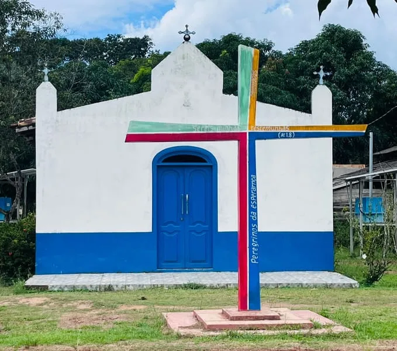
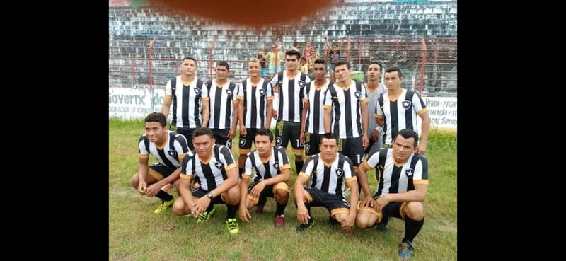
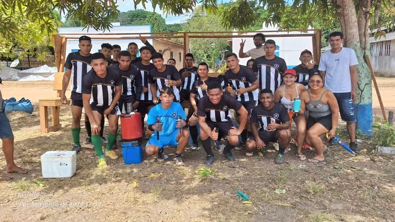
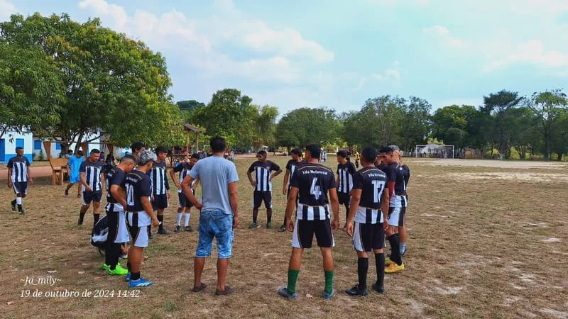
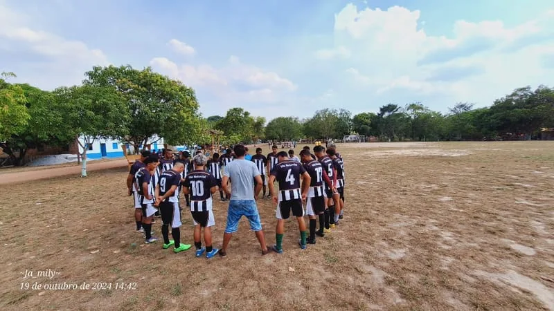
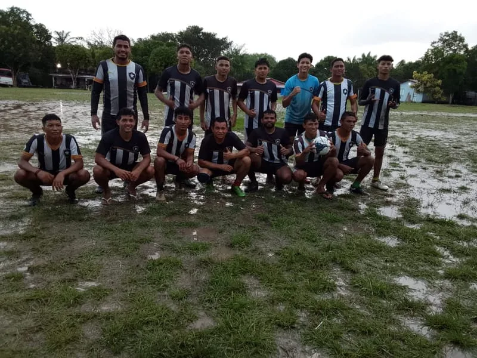

Associação Esportiva Clube Botafogo
O Botafogo é mais do que um time de futebol — é uma instituição que representa a identidade e o orgulho da Vila Melancial. Fundado por moradores apaixonados pelo esporte, o clube participa de campeonatos regionais e movimenta a comunidade com seus jogos e torneios.
As cores do time e sua torcida apaixonada fazem parte do cotidiano da vila, especialmente durante os campeonatos de futebol amador que acontecem ao longo do ano.
Campeonatos e Conquistas
O Botafogo — Melancial já conquistou diversos títulos em competições locais, sempre contando com o apoio incondicional da comunidade. Os jogos em casa reúnem dezenas de torcedores que vibram a cada partida.
Além do futebol, o clube promove eventos esportivos e sociais que fortalecem os laços entre os moradores e incentivam a prática esportiva entre os jovens.
Como Participar
Os treinos acontecem regularmente no campo da vila. Novos jogadores e torcedores são sempre bem-vindos! Entre em contato com a associação para mais informações sobre escalações, jogos e eventos.





